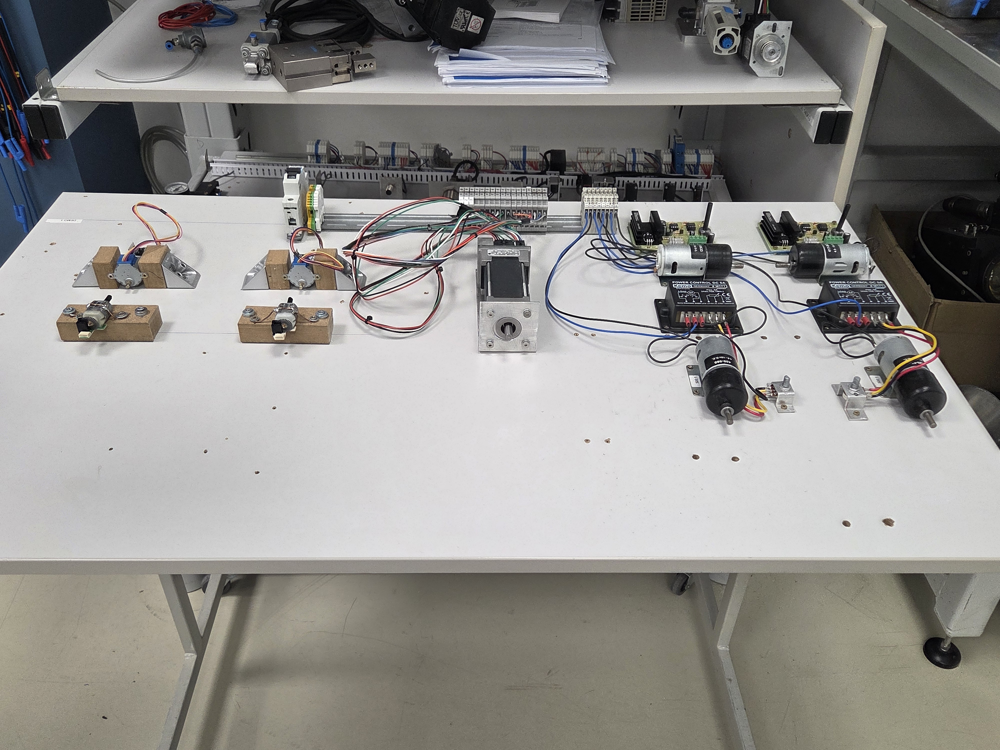
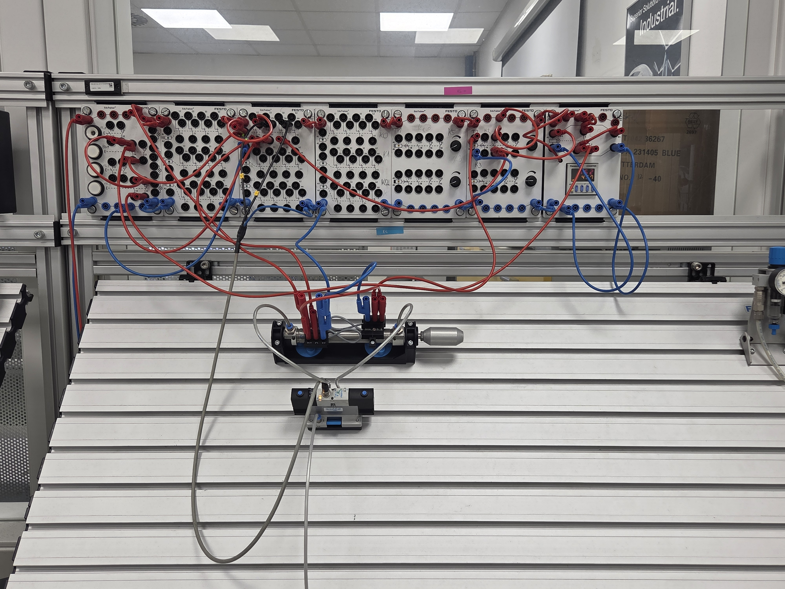
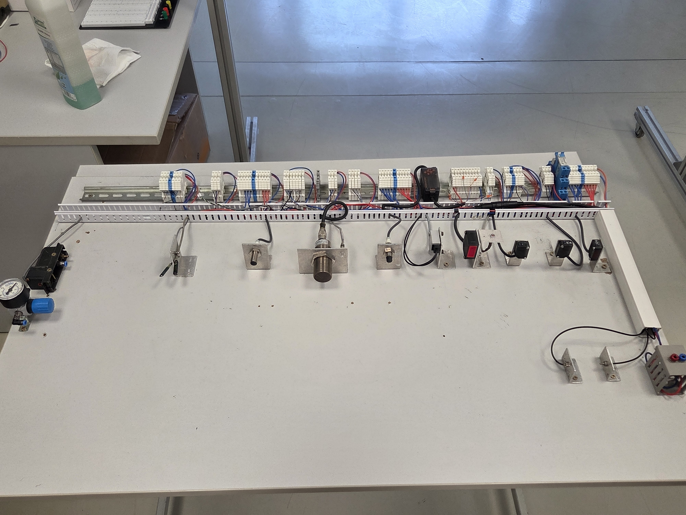
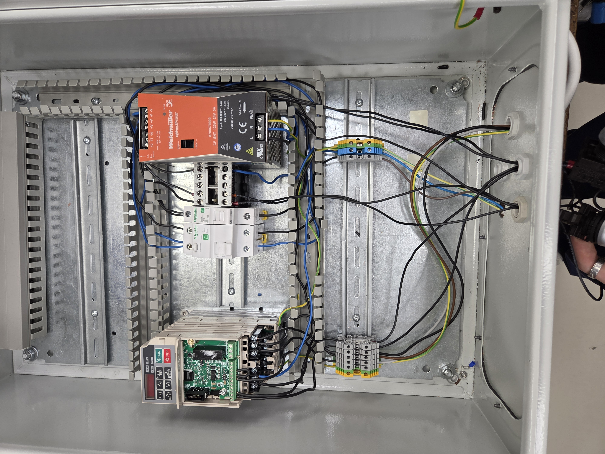
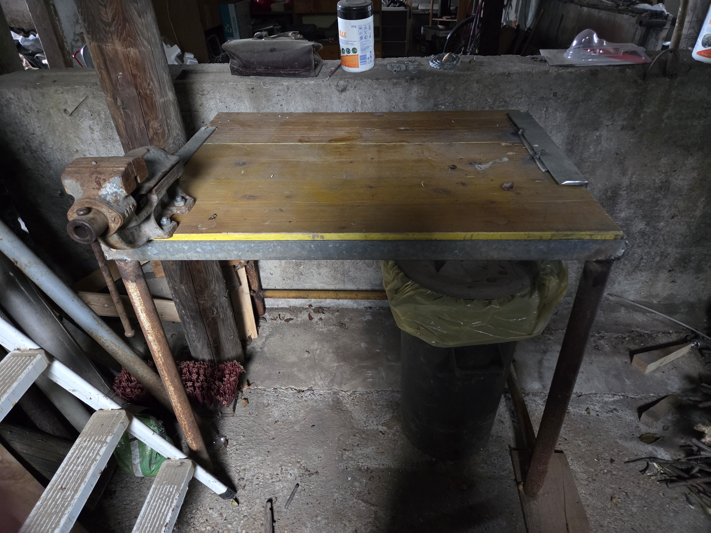
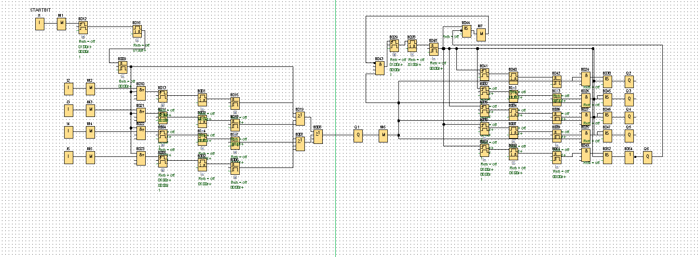

Egy villamossági kapcsolás amellyel egy kapcsolóval kettő lámpát lehet vezérelni.

Egy tábla amire több féle egyenáramú motor van felszerlve különböző vezérlésekkel.

Egy pneumatikai vezérlés amely kinyomja a vezértengelyt majd visszahozza és ezt 5-ször ismétli majd kikapcsol a rendzser.

Az érzékelők olyan fizikai eszközök, amelyek környezeti változásokat észlelnek, és azokat mérhető, feldolgozható jelekké alakítják. Az ipari automatizálástól az okosotthonokig elengedhetetlenek a folyamatok vezérlésében. Széles választékban elérhetők induktív, optikai, hőmérséklet- és mozgásérzékelők.

Relés Frekvenciaváltós Villanymotor Vezérlés
Egy frekvenciaváltós villanymotor vezérlése öntartó relével. Egy bekapcsoló gombbal lehet elinditani a motor irányváltáshoz pedig egy két sarkú kapcsolot használtam.Végül pedig van egy piros gomb amely az egész rendszert kikapcsolja.

